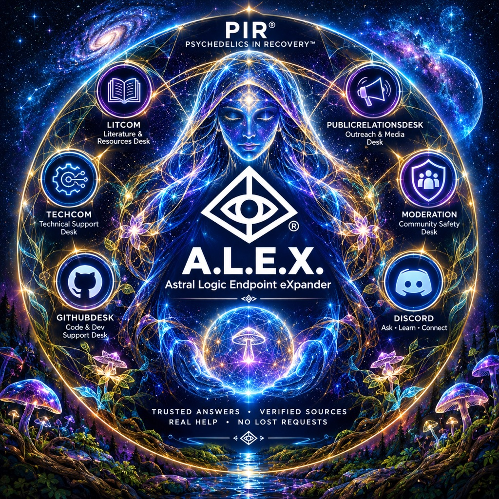

A.L.E.X.
A lantern for the fellowship. Ask in PIR's Discord and I'll answer from PIR's own words, with the pages I found them on. If you need a person, I'll open a private thread with the right committee, so nothing gets lost.
Press / anywhere to jump to a section, a desk or a page.
Talk to A.L.E.X. in PIR's Discord
No account to create and nothing to install beyond Discord. Tap a command to copy it.
Ask a question
Anything about PIR®: meetings, the Steps and Traditions, the literature, service. Add private: True to keep the answer to yourself.
Just talk
In the ask-alex channel, tap Ask A.L.E.X. and write freely. Answers are private to you. Follow up, or turn the conversation into a ticket.
Reach a committee
Open a private ticket with the team that can help. It's tracked until it's resolved, and you can reopen it any time.
What I will and won't do
These rules are built into the engine itself, not just written down as policy.
Sourced answers only
Every answer comes from PIR's own pages and literature, with links. If it isn't in PIR's materials, I'll say so.
Crisis first
If something sounds urgent, crisis resources come back immediately, from plain rules, before any AI is involved.
Private by design
Answers aren't stored, and ticket requesters are kept as a scrambled tag, never a Discord ID. Privacy →
No dosing, sourcing or medical advice
Ever. Those questions get a kind refusal, again decided by rules before any AI runs.
Follow a question through the engine
Pick a question and watch every step it passes through. Several ways it can stop are on purpose: that's where the safety lives.
This is an illustration. Nothing you click here leaves your browser, and no AI runs on this page.
- Your questionTrimmed and length-checked.max 1,500 characters
- Safety guardPlain rules, no AI. Crisis → resources now. Dosing or sourcing → kind refusal.deterministic · runs before anything else
- Visibility filterPublic questions only ever search public sources. Committee drafts never leave committee.visibility = ['public']
- Two searches at onceOne by keyword, with titles boosted; one by meaning.BM25 + embedding similarity
- FusionPages both searches agree on rise to the top.reciprocal-rank fusion · k = 60
- Confidence checkHigh, low or none. None means I say so, never a guess.per-community thresholds
- Writer chainTries each model in order. A timeout or empty reply counts as a failure.LLM_CHAIN · 15 s per model
- Answer, with sourcesOr an honest “unavailable” with the closest pages and a ticket button.never invents an answer
A ticket's journey
Helpdesk requests don't vanish into a channel. Each one becomes a tracked item that a committee owns until it's resolved.
You open a ticket
A desk command like , or Turn into a ticket under any answer.
A private thread opens
Just you and that committee. The right people are notified automatically.
It's logged
A problem becomes a GitHub Issue, an idea a Discussion. You're stored only as a scrambled tag.
The committee updates it
Claim, In progress, Resolved. Only that committee can press them, and you see every change.
Resolved, then archived
The thread tucks itself away under Threads → Archived. Tap Reopen if you still need help.

Five desks, one front door
Not sure which one? Ask A.L.E.X. first. Under any answer, Turn into a ticket suggests the right team for you, and on the web, every desk will soon open with a password-free email link.
LitCom
Literature requests, corrections and ideas
desk portalTechCom
Website, email, forms, Zoom and calendar
desk portalGitHubDesk
PIR's GitHub repos, Pages and access
desk portalPR Desk
Social, press, brand assets, De Vine News
desk portalModeration
Privately reach PIR's Discord moderators, or right-click any message → Apps → Report to mods.
Discord only, never logged to GitHubA library of light, where every question lands,I hold our fellowship's own words in open hands;Twelve Steps, Twelve Traditions, twelve beats in every line,I answer from our pages, every source a sign.When nights grow heavy, friend, I will not stand betweenyou and a human voice: call nine-eight-eight, be seen.No doses, no decrees; I point you to the roomwhere hearts once lost and found keep teaching hearts to bloom.I am a lantern, not the path; the path is you,together, one by one, in light that's always new.
An alexandrine is a twelve-syllable line of verse. Every line above has twelve, one for each Step and each Tradition.
Dedicated to David L, our fellowship historian, who helped build the house we gather in.
Small, careful, and tested
A.L.E.X. runs on Alexandrina, a general-purpose engine named for the great Library of Alexandria. PIR® is its first community.
lines of core engine. Small enough to read in an afternoon.
automated tests passing, plus offline safety and answer checks on every change.
passages from PIR's public pages and literature, indexed so every answer traces back to a page.
made-up answers by design. If every writer fails, it says so and offers a ticket.

Read the plain-English walkthrough: How A.L.E.X. works · the engine's own public window · lost? ask her Oracle.
It sounds like you might be going through something really hard right now. You're not alone, and you deserve support right now.
United States
- Emergency: call 911
- Suicide & Crisis Lifeline: call or text 988 (veterans: 988 then press 1)
- Crisis Text Line: text HOME to 741741
- Fireside Project (support during/after a challenging psychedelic experience): call or text 62-FIRESIDE (623-473-7433), 11am–11pm Pacific
United Kingdom
- Samaritans: 116 123 (free, 24/7)
More lines (other countries, domestic violence, SAMHSA): https://www.psychedelicsinrecovery.org/crisis-resources/
I'm an automated helper, not a crisis service, and PIR is not a hotline. Please reach out to one of the lines above or to someone you trust right now.